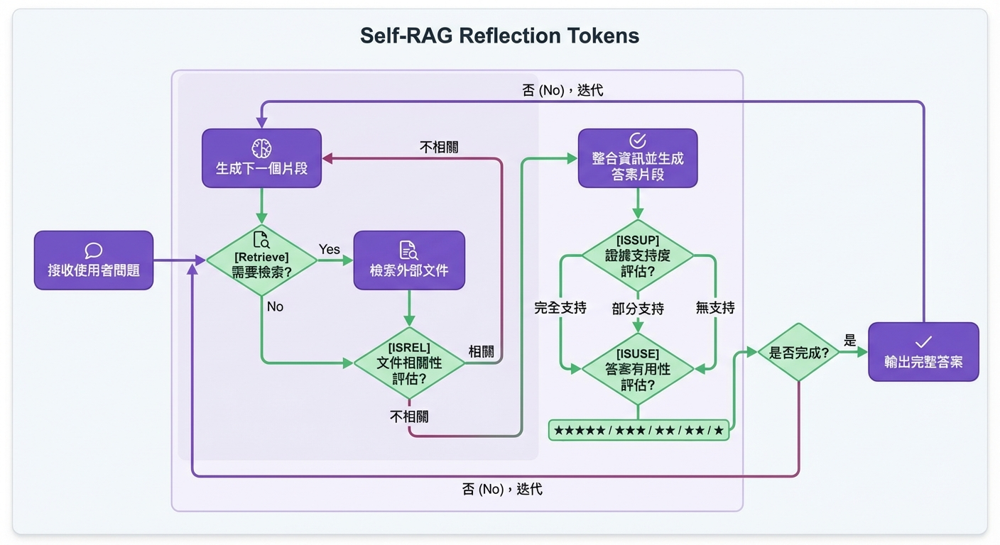

💡 一句話總結
Self-RAG 引入 Reflection Tokens，讓模型學會問自己：
「我該檢索嗎？」「檢索結果相關嗎？」「我的回答有依據嗎？」
從 Naive RAG 進化到 Advanced RAG 的關鍵技術。
📄 Abstract (摘要)
📄 論文原文
"Despite their remarkable capabilities, large language models (LLMs) often produce responses containing factual inaccuracies due to their sole reliance on the parametric knowledge they encapsulate. Retrieval-Augmented Generation (RAG), an ad hoc approach that augments LMs with retrieval of relevant knowledge, decreases such issues. However, indiscriminately retrieving and incorporating a fixed number of retrieved passages, regardless of whether retrieval is necessary, or passages are relevant, diminishes LM versatility or can lead to unhelpful response generation."
翻譯：儘管大型語言模型（LLM）具有卓越的能力，但由於它們僅依賴封裝在參數中的知識，經常產生包含事實錯誤的回應。檢索增強生成（RAG）是一種臨時方法，透過檢索相關知識來增強語言模型，減少了這類問題。然而，無論是否需要檢索或段落是否相關，都不加區別地檢索和整合固定數量的檢索段落，會降低語言模型的靈活性，或可能導致無用的回應生成。
🔍 Naive RAG 的問題
傳統 RAG 有兩個根本問題：
- 盲目檢索：不管是否需要，都會檢索固定數量的文檔
- 不判斷相關性：即使檢索到不相關的文檔，也會使用
- 不反思回答：生成答案後不會檢查是否有依據
Self-RAG 的解決方案：讓模型學會「自我反思」！
📄 論文原文（核心創新）
"We introduce a new framework called Self-Reflective Retrieval-Augmented Generation (Self-RAG) that enhances an LM's quality and factuality through retrieval and self-reflection. Our framework trains a single arbitrary LM that adaptively retrieves passages on-demand, and generates and reflects on retrieved passages and its own generations using special tokens, called reflection tokens."
翻譯：我們引入了一個名為自我反思檢索增強生成（Self-RAG）的新框架，透過檢索和自我反思來增強語言模型的品質和事實性。我們的框架訓練單一任意語言模型，該模型按需自適應地檢索段落，並使用稱為反思 token 的特殊 token 來生成和反思檢索到的段落及其自己的生成。
🚀 核心創新：Reflection Tokens
🎯 四種 Reflection Tokens
Self-RAG 使用特殊 token 讓模型進行自我反思：
🔍 Retrieve
問題：我該檢索嗎？
選項：Yes / No / Continue
📄 ISREL
問題：檢索結果相關嗎？
選項：Relevant / Irrelevant
✅ ISSUP
問題：回答有依據嗎？
選項：Supported / Partially supported / Not supported
💬 ISUSE
問題：回答有用嗎？
選項：Useful / Not useful
🎯 生活類比：自我檢查的研究員
Naive RAG = 不思考的研究員
- 看到問題就去查資料（不管是否需要）
- 查到資料就用（不管是否相關）
- 寫完報告就交（不管是否正確）
Self-RAG = 會自我檢查的研究員
- 先問自己：「這個問題需要查資料嗎？」
- 查完後問：「這些資料相關嗎？」
- 寫完後問：「我的回答有依據嗎？有用嗎？」
🔄 Self-RAG 工作流程

📊 Self-RAG 迭代生成與反思流程：從問題到答案的完整自我監督過程
💡 論文原始圖表
Self-RAG 論文中的 Figure 2 展示了完整的工作流程：
- Adaptive Retrieval：使用 [Retrieve] token 決定是否檢索
- Relevance Judgment：使用 [ISREL] token 評估檢索相關性
- Support Verification：使用 [ISSUP] token 驗證生成內容是否有依據
- Utility Assessment：使用 [ISUSE] token 評估答案有用性
- Segment-wise Generation：逐段生成並反思
📄 請參考 論文 PDF 第 3 頁 Figure 2
迭代式生成與反思
- 判斷是否需要檢索：生成 Retrieve token (Yes/No/Continue)
- 如果需要檢索：檢索相關文檔
- 評估檢索結果：生成 ISREL token (Relevant/Irrelevant)
- 生成回答：基於檢索結果生成答案
- 反思回答：生成 ISSUP token (檢查是否有依據)
- 評估有用性：生成 ISUSE token (檢查是否有用)
- 如果回答不佳：回到步驟 1，重新檢索或生成
💡 關鍵優勢
- 自適應檢索：只在需要時檢索，節省計算資源
- 品質控制：自動判斷檢索結果和生成答案的品質
- 迭代改進：如果回答不佳，可以重新檢索或生成
- 可解釋性：Reflection tokens 提供決策過程的可視化
🎓 訓練方法
📚 使用 GPT-4 生成反思標籤
Self-RAG 的訓練需要大量的反思標籤。論文使用 GPT-4 來生成這些標籤：
- 對每個查詢，使用 GPT-4 判斷是否需要檢索
- 對檢索結果，使用 GPT-4 判斷是否相關
- 對生成的答案，使用 GPT-4 判斷是否有依據和有用
- 用這些標籤訓練模型生成 Reflection Tokens
這是一個「用大模型訓練小模型」的範例，讓較小的模型也能具備自我反思能力。
📊 實驗結果
✅ 在知識密集型任務上的提升
Self-RAG 在多個任務上超越傳統 RAG：
- Open-Domain QA：準確率提升 5-10%
- 事實驗證：減少幻覺，提升可信度
- 長文本生成：更好的連貫性和相關性
更重要的是，Self-RAG 在不需要檢索的任務上也能表現良好，
因為它會自動判斷是否需要檢索。
🔄 Self-RAG vs Naive RAG
| 面向 |
Naive RAG |
Self-RAG |
| 檢索策略 |
固定檢索 k 個文檔 |
自適應檢索（按需） |
| 相關性判斷 |
不判斷 |
自動判斷（ISREL） |
| 答案驗證 |
不驗證 |
自我反思（ISSUP, ISUSE） |
| 迭代改進 |
單次生成 |
可迭代改進 |
| 計算效率 |
總是檢索 |
按需檢索，更高效 |
📜 歷史意義
🌟 Self-RAG 的貢獻
- 從 Naive 到 Advanced：開啟了 Advanced RAG 時代
- 自我反思機制：證明模型可以學會自我批評
- 自適應檢索：為後續的 Agentic RAG 鋪路
- 可解釋性：Reflection tokens 提供決策透明度
Self-RAG 發表於 2023 年 10 月，是 Advanced RAG 技術的代表作。
它證明了 RAG 不僅可以「檢索」，還可以「思考」。